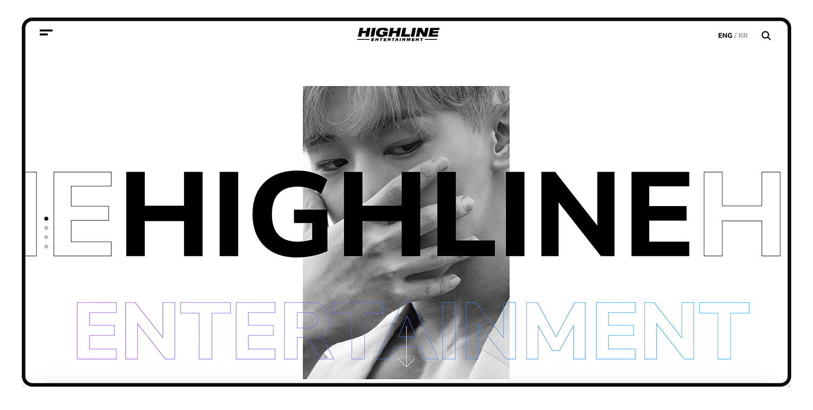
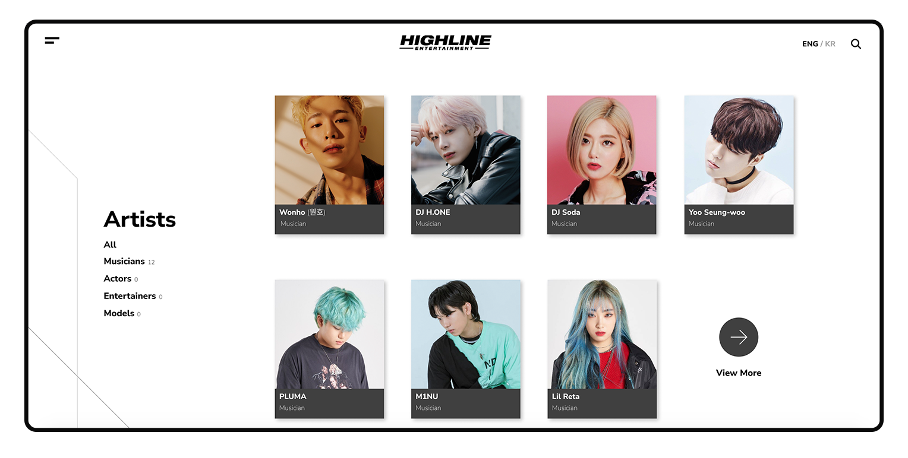
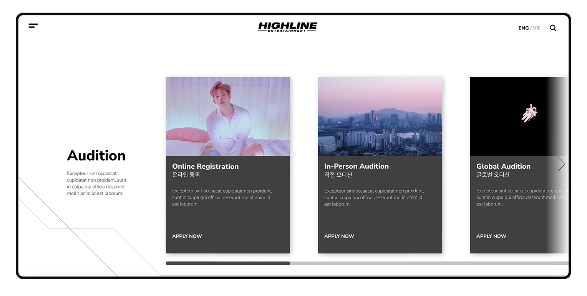
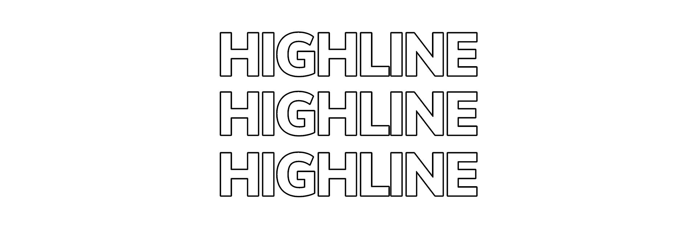

Highline Entertainment is a rising South Korean music label that currently does not have a website. Although I am not affiliated to Highline Entertainment, I thought it would be an inspiring exercise to make a mock-up for what their potential website could look like.
I wanted to design a website that is trendy and experimental. I aimed to contrast sharp lines and clean layouts with artsy touches. Through this project, I wanted to grow my skills in designing websites and working in the realm of UI/UX.

The concept behind the look of the website is to capitalize on the name of the brand (“Highline”). I wanted to play around with outlines and sharp shapes. I wanted to create something that was as clear-cut as it was playful.
In terms of the colors of the website, I primarily used grayscale colors and contrasted sharp blacks on whites to amplify the clean-cut aesthetic. I used this color scheme to make the mock-up more moldable to fit any branding colors.
The main reason I used this color scheme was because I did not have any reference to what kind of colors are in the brand's visual identity since Highline Entertainment was a new company without a website. The only thing I had to go off of was their logo that does not use any notable colors (only uses black and white).


